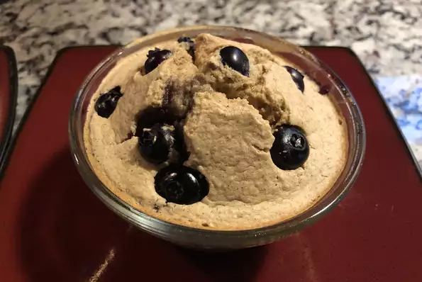

Baked Oats

Blended Baked Oats
Making blended baked oats is SIMPLE!
The base recipe is comprised of only a few common household ingredients, and it is highly customizable to fit your flavor mood.
Ingredients
- cooking spray
- 1 cup oats
- 1 banana
- 1 tsp baking powder
- 1/2 cup almond milk
- 2 tbsp honey
- 1/2 tsp cinnamon
- pinch of salt
- Optional
- blueberries
- chocolate chips
- whatever your heart desires!
Steps
- Preheat oven to 350 degrees F. Spray bowl with cooking spray.
- Combine oats, banana, baking powder, salt, almond milk, honey, and cinnamon in a blender. Blend until smooth.
- Fill mixture into bowl, and add any optional additions.
- Bake for approx. 25 minutes
Back To Top
Back To Main Menu